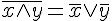
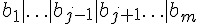
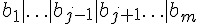

前言
編輯小語
在本期的「程式人雜誌」中，聚焦的主題是「邏輯推論的歷史」，包含理論與演進過程！
邏輯推論在「離散數學」「計算理論」與「人工智慧」當中通常是課程的焦點之一，也是電腦的重要技術之一，理解邏輯理論與歷史可以讓程式人具備足夠的理論基礎，對修鍊「內功」是有些幫助的。
當然、本期不只有「邏輯推論」的相關文章，還有更精彩的 Arduino, VB, OpenNI, 開放電腦計畫等內容，希望讀者會喜歡這期的「程式人雜誌」！
---- （程式人雜誌編輯 - 陳鍾誠）
授權聲明
本雜誌許多資料修改自維基百科，採用 創作共用：姓名標示、相同方式分享 授權，若您想要修改本書產生衍生著作時，至少應該遵守下列授權條件：
- 標示原作者姓名 (包含該文章作者，若有來自維基百科的部份也請一併標示)。
- 採用 創作共用：姓名標示、相同方式分享 的方式公開衍生著作。
另外、當本雜誌中有文章或素材並非採用 姓名標示、相同方式分享 時，將會在該文章或素材後面標示其授權，此時該文章將以該標示的方式授權釋出，請修改者注意這些授權標示，以避免產生侵權糾紛。
例如有些文章可能不希望被作為「商業性使用」，此時就可能會採用創作共用：姓名標示、非商業性、相同方式分享 的授權，此時您就不應當將該文章用於商業用途上。
最後、懇請勿移除公益捐贈的相關描述，以便讓愛心得以持續散播！
本期焦點
數學短訊：邏輯世界的歷史
簡介
邏輯學是西方科學中淵遠流長的一門學問，從西元前 350 年亞里斯多德的三段論開始，就開啟了歐洲文明對邏輯學的興趣之窗。然而這一個興趣同樣隨著西方文明的發展而起伏不定，直到西元 1850 年左右，George Boole (布爾) 開始研究布林代數，才讓邏輯學成為近代數學的一個重要領域。接著，Gottlob Frege 在 1870 年左右所提出的一階邏輯系統，繼承布林系統並向上延伸，形成一個數學基礎穩固且強大的邏輯系統，於是整個經典的邏輯系統建立完成。
雖然如此，這些邏輯系統仍然是掌上的玩物，而且沒有人能確定這樣的邏輯系統，其能力到底有多強，是否一致且完備，是否有某些極限。希爾伯特在 1900 年所提出的 25 個數學問題中，這個問題被排在第二個提出。然而，希爾伯特並沒有能證明一階邏輯系統的完備性，而是在 1929 年由哥德爾證明完成了。
哥德爾的成就不僅於此，1931 年他更進一步證明了一個非常令人驚訝的定理，在「一階邏輯的擴充系統 - 皮諾數論系統」當中，不具有完備性，而且它證明了假如該系統是完備的，將會導致矛盾。
哥德爾在證明完備定理與不完備定理時，採用的都是矛盾証法，也就是透過排中律所證明的，這樣的証明並非建構性的，因此即使建立了完備定理，也沒有人能構造出一個建構式的証明方法，可以檢證一階邏輯的定理。
1965 年，Robinson 提出了一條非常簡單的邏輯證明規則 -- Resolution，並且說明了如何利用矛盾檢證程序 Refutation，證明邏輯規則在某系統中的真假，這個方法既簡單又優美，因此廣為數學界與計算機科學界所稱道。以下，我們將更詳細的說明上述人物在邏輯學上的貢獻。
亞里斯多德 (Aristotle) (出生於西元前 322 年)
亞里斯多德在其其理則學 (zoology) 研究中，提出了下列的三段式推論規則 Barbara，簡稱為三段論。
| 類型 | 語句 | 說明 |
|---|---|---|
| 大前提 | 所有人都終會死亡 | 普遍原理 |
| 小前提 | 蘇格拉底是人 | 特殊陳述 |
| 結論 | 蘇格拉底終會死亡 | 推論結果 |
布爾 (Boole) (出生於 1815年)
Boole 研究邏輯時，提出了一種只有真值與假值的邏輯，稱為二值邏輯，通常我們用 0 代表假值，1 代表真值。布爾研究這種邏輯系統，並寫出了一些代數規則，稱為布林代數，以下是其中的一些代數規則。
| 規則 (數學寫法) | 名稱 |
|---|---|
 |
OR 的結合律 |
 |
OR 的交換律 |
 |
AND 的結合律 |
| AND 的交換律 | |
| 狄摩根定律(1) | |
|  | 狄摩根定律(2) |
說明：上述規則中的  代表邏輯或 (AND) (在程式語言裏常寫為
代表邏輯或 (AND) (在程式語言裏常寫為 & 或 and)，  代表邏輯或 (OR) (在程式語言裏常寫為
代表邏輯或 (OR) (在程式語言裏常寫為 | 或 or)。所以若改用程式領域的寫法，可改寫如下。
| 規則 (數學寫法) | 名稱 |
|---|---|
x | (y | z) = (x | y) | z |
OR 的結合律 |
x | y = y | z |
OR 的交換律 |
x & (y & z) = (x & y) & z |
AND 的結合律 |
x & y = y & x |
AND 的交換律 |
-(x|y) = -x & -y |
狄摩根定律(1) |
-(x&y) = -x | -y |
狄摩根定律(2) |
福雷格 (Frege) (出生於 1848年)
Frege 在研究邏輯系統時，將函數的概念引入到邏輯系統當中，這種函數被稱為謂詞，因此該邏輯系統被稱為謂詞邏輯。然後，Frege 又引入了兩個量詞運算，  (對於所有) 與 (存在)，透過謂詞的限定作用，以及這兩個量詞，Frege 架構出了這種具有函數的邏輯系統，後來被稱為一階邏輯系統 (First Order Logic)。
(對於所有) 與 (存在)，透過謂詞的限定作用，以及這兩個量詞，Frege 架構出了這種具有函數的邏輯系統，後來被稱為一階邏輯系統 (First Order Logic)。
以下是我們將亞里斯多德的三段論，轉化為一階邏輯後，所寫出的一階邏輯規則。
| 類型 | 語句 | 說明 |
|---|---|---|
| 大前提 |  |
所有人都終會死亡 |
| 小前提 |  |
蘇格拉底是人 |
| 結論 | 蘇格拉底終會死亡 |
希爾伯特 (David Hilbert) (出生於 1862年)
事實上，在電腦被發明之前，數學界早已開始探索「公理系統」的能力極限。在西元 1900 年時，德國的偉大數學家希爾伯特 (Hilbert)，提出了著名的 23 個數學問題，其中的第二個問題如下所示。
證明算術公理系統的無矛盾性 The compatibility of the arithmetical axioms.
在上述問題中，希爾伯特的意思是要如何證明算術公理系統的 Compatibility，Compatibility 這個詞意謂著必須具有「一致性」 (Consistency) 與「完備性」(Completeness)。
所謂的「一致性」，是指公理系統本身不會具有矛盾的現象。假如我們用 A 代表該公理系統，那麼 A 具有一致性就是 A 不可能導出兩個矛盾的結論，也就是 A => P 與 A=> -P 不可能同時成立。
所謂的「完備性」，是指所有「永遠為真的算式」(也就是定理) 都是可以被証明的，沒有任何一個定理可以逃出該公理系統的掌握範圍。
然而，希爾伯特耗盡了整個後半生，卻也無法證明整數公理系統的一致性與完備性。或許是造化弄人，這個任務竟然被希爾伯特的一位優秀學生 - 哥德爾 (Godel) 所解決了，或者應該說是否決了。
哥德爾 (Kurt Gödel) (出生於 1906 年)
哥德爾實際上證明了兩個定理，第一個是 1929 年提出的「哥德爾完備定理」(Gödel's Complete Theorem)，第二個是 1931 年證明的「哥德爾不完備定理」(Gödel's Incomplete Theorem)，這兩個定理看來似乎相當矛盾，但事實上不然，因為兩者所討論的是不同的公理系統，前者的焦點是「一階邏輯系統」(First Order Logic)，而後者的焦點則是「具備整數運算體系的一階邏輯系統」。
哥德爾完備定理證明了下列數學陳述：
一階邏輯系統是一致且完備的
一致性代表一階邏輯系統不會具有矛盾的情況，而完備性則說明了一階邏輯當中的所有算式都可以被証明或否証。
哥德爾不完備定理證明了下列數學陳述：
任何一致且完備的「數學形式化系統」中，只要它強到足以蘊涵「皮亞諾算術公理」，就可以在其中構造在體系內「既不能證明也不能否證的命題」。
哥德爾不完備定理改用另一個說法，如下所示：
如果一個包含算術的公理系統可以用來描述它自身時，那麼它要麼是不完備的，要麼是不一致的，不可能兩者皆有！
(筆者註：若該公理系統包含無限條公理時，必須是可列舉的 recursive enumerable)
羅賓遜 (John Alan Robinson) (出生於 1928 年)
雖然哥德爾證明了一階邏輯是完備的，但是卻沒有給出一個建構式的方法，可以推理出所有的的一階邏輯定理。這個問題由 John Alan Robinson 在 1965 年解決了。
Robinson 提出的 refutation 邏輯推論法是一種反證法，任何一階邏輯的算式 P 只要在系統 S 當中是真的，只要將 -P 加入該系統 S 中，就可以經由反證法導出矛盾。如果 P 在系統 S 當中不是真的，那麼將 P 加入 S 當中就無法導出矛盾。
所謂的 refutation 反證法是依靠一個稱為 resolution 的邏輯規則，該規則如下所示：

假如我們將上述算式中的  寫為 A，將  寫為 B，則上述算式可以改寫如下：
寫為 A，將  寫為 B，則上述算式可以改寫如下：

結語
邏輯學在西方文化中扮演了非常重要的角色，而且可以說是「現代科學」會出現在歐洲的重要原因，假如將「邏輯學」從西方文化中拿掉，或許工業革命就不會出現在歐洲了？
您可以想像「孔子」整天追根究柢，常常和人辯論一件事情到底是真的還假，而且要轉換成符號，並且用邏輯的方式去證明嗎？
但是「亞里斯多德」在那個年代就是這樣追根究柢的，所以他才會去研究解剖學，把動物給切開看看裡面有甚麼，我想這也是他提出三段論背後的原因吧！
參考文獻
- 維基百科：亞里斯多德
- 維基百科：喬治·布爾
- 維基百科：三段論
- 維基百科：哥德爾不完備定理
- 維基百科：哥德爾完全性定理
- 維基百科：戈特洛布·弗雷格
- 維基百科：大衛·希爾伯特
- 維基百科：希爾伯特的23個問題
- 維基百科：庫爾特·哥德爾
- Wikipedia:Zoology
- Wikipedia:Aristotle
- Wikipedia:Boolean Logic
- Wikipedia:George Boole
- Wikipedia:Frege
- Wikipedia:Hilbert's_problems
- Wikipedia:John Alan Robinson
- Wikipedia:Resolution (Logic)
- Hilbert's Mathematical Problems
- Wikipedia:Kurt_Gödel
【本文由陳鍾誠取材並修改自 維基百科，採用創作共用的 姓名標示、相同方式分享 授權】
布林邏輯與推論系統 -- 何謂嚴格的數學證明？
前言
當我還是個學生時，我總是困惑著如何應付老師的考試，其中一個重要的數學困擾是，老師要我們「證明」某個運算式。
最大的問題不在於我不會「證明」，因為在很多科目的證明題當中，我也都「答對了」，但是這種答對總是讓我感到極度的沒有把握，因為有時老師說「這樣的證明是對的」，但有時卻說「這樣的證明是錯的」。
更神奇的是，老師的證明永遠都是對的，他們可以突然加入一個「推論」，而這個推論的根據好像之前沒有出現過，然後他們說：「由此可證」、「同理可證」....。
直到有一天，我終於懂了。
因為課堂上老師的證明往往不是「嚴格的證明」，因為嚴格的證明通常「非常的困難」，每個證明都可以是一篇論文，甚至在很多論文當中的證明也都不是嚴格的。
所以在課堂上，老師總是可以天外飛來一筆的，跳過了某些「無聊的步驟」，奇蹟式的證明了某些定理，而這正是我所以感到困擾的原因。
一般的證明
一般而言，日常生活中的證明，通常是不嚴格的。
舉例來說，我可以「證明」某人殺了死者，因為殺死死者的兇刀上有「某人」的指紋。
但是這樣的證明並不嚴格，因為有很少的可能性是「某人摸過兇刀、但是並沒有殺人」。
所以我們總是可以看到那個「外表看似小孩，智慧卻過於常人」的「名偵探柯南」，總是天外飛來一筆的「證明」了某人是兇手，這種證明與數學證明可是完全不同的。
嚴格的證明
數學的證明通常不能是「機率式」的，例如：「我證明他 99% 殺了人」，這樣的證明稱不上是嚴格的證明。
嚴格的證明也並非結果一定要是 100% 的正確 (當然也不是說結果不正確)，真正的證明是一種過程，而不是結果。
怎麼說呢？
數學其實很像程式領域的演算法，或者就像是電腦的運作過程，當我們設計出一顆 CPU 之後，你必須用該 CPU 的指令撰寫出某些函數，以便完成某個程式。
那麼，數學的 CPU 是甚麼呢？
答案是「公理系統」 (Axioms)！
只有透過公理系統，經由某種演算方式，計算出待證明定理在任何情況下都是真的，這樣才算是證明了該定理。
這些公理系統其實就是數學的 CPU 指令集。
布林代數大概是數學當中最簡單的系統了，因為布林代數的値只有兩種--「真與假」 (或者用 0 與 1 代表)。
為了說明嚴格的數學證明是如何進行的，我們將從布林代數的公理系統 (CPU?) 開始，說明如何證明布林代數的某些定理，就好像是如何用指令集撰寫程式一樣。
布林邏輯
對於單一變數 x 的布林系統而言，x 只有兩個可能的值 (0 或 1)。
對於兩個變數 x, y 的布林系統而言，(x, y) 的組合則可能有 (0,0), (0,1), (1,0), (1,1) 四種。
對於三個變數 x, y, z 的布林系統而言，(x, y, z) 的組合則可能有 (0,0, 0), (0,0,1), (0,1,0), (0,1,1), (1,0, 0), (1,0,1), (1,1,0), (1,1,1) 八種。
基本的布林邏輯運算有三種，AND (且), OR (或), NOT (反)，在布林代數當中，通常我們在符號上面加一個上標橫線代表 NOT，用 代表 AND，用 代表 OR。
但是在程式裏面，受到 C 語言的影響，很多語言用驚嘆號 ! 代表 NOT，用 & 代表 AND，用 | 代表 OR。以下我們將採用類似 C 語言的程式型寫法進行說明。
| NOT | AND | OR | ||||||||||||||||||||||||||||||||||||
|
|
|
假如我們想知到某個邏輯式的真值表，例如 (-x | y) 的真值表，只要透過列舉的程序就可以檢查完畢。
| x | y | -x | -x|y |
|---|---|---|---|
| 0 | 0 | 1 | 1 |
| 0 | 1 | 1 | 1 |
| 1 | 0 | 0 | 0 |
| 1 | 1 | 0 | 1 |
接著，我們就可以定義一些公理系統，這些「公理系統」就像是數學推理的指令集，讓我們可以推論出哪些邏輯式在這個公理系統下是真的 (定理)，哪些邏輯式這個公理系統下不一定是真的。
公理系統 1
舉例而言，假如我們制定了一個公理系統如下所示。
公理 1: -p | q
公理 2: p那麼，我們就可以列出這個布林系統的真值表。
| p | q | -p|q |
|---|---|---|
| 0 | 0 | 1 |
| 0 | 1 | 1 |
| 1 | 0 | 0 |
| 1 | 1 | 1 |
在上述真值表中，凡是無法滿足公理系統的列，就代表該項目違反公理系統，因此在此公理系統下不是真的，可以被刪除 (不是該公理系統的一個「解答」)。
註：在邏輯的術語中，滿足該公理系統的解答，稱為一個 Model (模型)。
在上述表格中，前兩條的 x 為 0，因此不滿足公理 2，而第三條的 -p|q 為 0，不滿足公理 1，因此符合該公理系統的項目就只剩下了一個了。
| p | q | -p|q |
|---|---|---|
| 1 | 1 | 1 |
在這個滿足公理系統的真值表當中，我們可以看到 q 只能是 1，也就是 q 其實是個定理。
說明：在上述邏輯推論系統當中， -p|q 可以簡寫為 p → q，因此上述公理系統可以改寫如下，這樣的推論法則稱為 Modus Ponus (中文翻成「肯定前件」)。
公理 1: p → q
公理 2: p
------------------
結論： q公理系統 2
假如我們定義了以下的公理系統：
公理 1: -p | q
公理 2: p | r那麼我們可以列出真值表如下：
| p | q | r | -p|q |
p|r |
|---|---|---|---|---|
| 0 | 0 | 0 | 1 | 0 |
| 0 | 0 | 1 | 1 | 1 |
| 0 | 1 | 0 | 1 | 0 |
| 0 | 1 | 1 | 1 | 1 |
| 1 | 0 | 0 | 0 | 1 |
| 1 | 0 | 1 | 0 | 1 |
| 1 | 1 | 0 | 1 | 1 |
| 1 | 1 | 1 | 1 | 1 |
當我們將不符合公理系統的項目拿掉之後，以上的真值表就只剩以下這些項目。
| p | q | r | -p|q |
p|r |
|---|---|---|---|---|
| 0 | 0 | 1 | 1 | 1 |
| 0 | 1 | 1 | 1 | 1 |
| 1 | 1 | 0 | 1 | 1 |
| 1 | 1 | 1 | 1 | 1 |
此時，如果我們檢查這些項目中 q|r 的真值表，會發現 q|r 為真者其結果全部為 1 ，因此 q|r 在這個公理系統下是真理。
| p | q | r | -p|q |
p|r |
q|r |
p|q |
|---|---|---|---|---|---|---|
| 0 | 0 | 1 | 1 | 1 | 1 | 0 |
| 0 | 1 | 1 | 1 | 1 | 1 | 1 |
| 1 | 1 | 0 | 1 | 1 | 1 | 1 |
| 1 | 1 | 1 | 1 | 1 | 1 | 1 |
但是如果我們檢查這些項目中 p|q 的真值表，會發現有一項為 0 ，因此 p|q 在這個公理系統下並非真理。
所以 q|r 在此公理系統下是一個定理，但 p|q 則不是定理。
說明：在上述邏輯推論系統當中， -p|q 可以簡寫為 p → q，而 p|r 則可以想成 -(-p)|r ，於是寫成 -p → r。
於是您可以觀察到當 p=1 時 q=1，當 p=0 時 r=1，而 p 只有可能是 1 或 0，於是 q 與 r 兩者至少有一個成立，這也就是推論出的定理 q|r 成立的原因了。
推論法則
現在，我們已經具備了足夠的基本知識，可以用來說明何謂嚴格的數學證明了。
假如我們將公理系統 2 中推論出 q|r 的程序，變成一條明文的規則，如下所示：
(-p | q) & (p | r) → (q|r)那麼，我們就可以用這樣的規則進行推論，這個推理方式乃是 Robinson 所提出的，稱為 Resolution 法則。
於是我們可以根據這條規則，推論出某個邏輯公理系統下的定理。
必須注意的是，在以上的描述中，我們並沒有區分變項與常項。讓我們在此先說明一下。
在一般的邏輯系統中，通常我們用小寫代表變項，大寫代表常項。其中的變項可以設定成任意的項目，而常項則只能代表自己。
舉例而言，A, B, C, DOG, SNOOPY 等代表常項，而 x, y, z, w, .... 等則代表變項。
公理系統理可以包含變項與常項，舉例而言，假如有個公理系統如下所示。
A | -B
-A | C
-(-B | C) | D而這整個邏輯系統的推論法則只有一條，那就是 Resolution 法則，也就是 (-p | q) & (p | r) → (q|r) 。
我們可以透過推論法則對公理系統中的公理進行綁定 (例如 p 設定為 A，q 設定為 -B ....) 與推論，得到下列結果：
(A | -B) & (-A | C) → (-B|C) ; 令 p=A, q=-B, r=C ，於是可以推出 (-B|C)。
(-B|C) & (-(-B | C) | D) → D ; 令 p=(-B|C), q=D, r=空集合，於是可以推出 D。透過這樣的推論、我們就得到了以下的「事實庫」。
A | -B
-A | C
-(-B | C) | D
(-B | C)
D如此我們就可以不需要依靠真值表，直接從公理系統開始，透過嚴格的計算程序，推論出該公理系統中的定理了。
這種證明方式，就是一種為嚴格的數學證明。
這種證明所遵循的，乃是一種 『公理 / 推論 / 定理1 / 推論 / 定理2 / ...』 的方式，這種方式讓證明變成了一種計算過程，是可以寫成電腦程式的，這種證明方式乃是一種嚴格可計算的證明方式。
後記
大部分的數學系統，都希望能達到這樣嚴格的程度，但可惜的是，並非所有數學系統都能完全達到這樣嚴格的程度。舉例而言：歐氏幾何可以說是公理化的早期經典之作，但其中仰賴圖形直覺的證明過程仍然有很多，並非完全達到公理化。而微積分等數學的嚴格公理化也一直是數學家還在研究的問題。
但對公理化數學體系最精彩的一段歷史是，希爾伯特對公理化的問題與歌德爾不完備定理對數學可完全公理化的反證，以下是這段歷史的簡要說明。
20 世紀的大數學家 Hilbert 曾經於 1900 年提出的 23 個數學問題中提到一個問題，就是「是否能為數學系統建立證明法則，讓數學證明可以完全被計算出來」，後來歌德爾 (Godel) 在 1926 年證明了一階邏輯的完備定理，讓大家看到了一線曙光，但歌德爾在 1929 年又提出了一個數論系統的不完備定理，證明了有些定理無法透過計算程序證明。
歌德爾的研究，後來在電腦領域，被圖靈 (Turing) 重新詮釋了一遍，圖靈證明了「停止問題」是電腦無法 100% 正確判定的問題，這也開啟了後來計算理論的研究之河。圖靈也因此而成為計算理論領域的第一人，所以 ACM 這個組織才會將電腦界的最重要獎項稱為「圖靈獎」(Turing Award)。
參考文獻
- 維基百科：命題邏輯
- 相關討論：為甚麼國中的數學證明是從「歐式幾何」開始教，而不從「布林代數」開始教呢？
- 數學中的公理化方法 (上) 吳開朗
- 數學中的公理化方法 (下) 吳開朗
【本文由陳鍾誠取材並修改自 維基百科，採用創作共用的 姓名標示、相同方式分享 授權】
謂詞邏輯、一階邏輯與「哥德爾完備定理」
前言
在 布林邏輯與推論系統 -- 何謂嚴格的數學證明？ 這篇文章中，我們介紹了「布林邏輯」(Boolean Logic) 這種簡單的推論系統，這種邏輯系統又稱為「命題邏輯」(Propositional Logic)。
在本文中，我們將介紹一個能力較強大的邏輯系統，稱為「一階邏輯」(First Order Logic) 系統，這是一種「謂詞邏輯」(Predicate Logic) 的實例，然後再說明這種邏輯系統中的一個重要定理，稱為「哥德爾完備定理」。
謂詞邏輯
在布林邏輯中，只有用來代表真假值的簡單變數，像是 A, B, C, X, Y, Z .... 等，所以邏輯算式看來通常如下：
- P & (P=>Q) => Q.
- A & B & C => D | E.
- -(A & B) <=> -A | -B.
這種命題邏輯裏沒有函數的概念，只有簡單的命題 (Proposition)，因此才稱為命題邏輯。
而在謂詞邏輯裏，則有「布林函數」的概念，因此其表達能力較強，例如以下是一些謂詞邏輯的範例。
- Parent(x,y) <= Father(x,y).
- Parent(John, Johnson).
- Ancestor(x,y) <= Parent(x,y).
- Ancestor(x,y) <= Ancestor(x,z) & Parent(z,y).
您可以看到在這種邏輯系統裏，有「布林變數」的概念 (像是 x, y, z 等等)，也有函數的概念，像是 Parent(), Father(), Ancestor() 等等。
一階邏輯
在上述這種謂詞邏輯系統中，如果我們加上 (對於所有) 或  (存在) 這兩個變數限定符號，而其中的謂詞不可以是變項，而必須要是常項，這種邏輯就稱為一階邏輯。
(存在) 這兩個變數限定符號，而其中的謂詞不可以是變項，而必須要是常項，這種邏輯就稱為一階邏輯。
 ; 人都是會死的。
; 人都是會死的。 ; 蘇格拉底是人。
; 蘇格拉底是人。 ; 蘇格拉底會死。
; 蘇格拉底會死。
當然、規則可以更複雜，像是以下這個範例，就說明了「存在一些人可以永遠被欺騙」。

二階邏輯
如果一階邏輯中的謂詞，放寬成可以是變項的話 (這些變項可以加上 與 等符號的約束)，那就變成了二階邏輯，以下是一些二階邏輯的規則範例。


 ; 數學歸納法。
; 數學歸納法。
一致性與完備性
在邏輯系統中，所謂的「一致性」，是指公理系統本身不會具有矛盾的現象。假如我們用 A 代表該公理系統，那麼 A 具有一致性就是 A 不可能導出兩個矛盾的結論，也就是 A => P 與 A=> -P 不可能同時成立。
哥德爾完備性定理
哥德爾於 1929 年證明了「哥德爾完備定理」(Gödel's Complete Theorem)，這個定理較簡化的陳述形式如下：
- 一階邏輯系統是一致且完備的，也就是所有的一階邏輯定理都可以透過機械性的推論程序證明出來，而且不會導出矛盾的結論。
以下是哥德爾完備定理的兩種陳述形式，詳細的證明方法請參考 Wikipedia:Original proof of Gödel's completeness theorem。
Theorem 1. Every formula valid in all structures is provable.
Theorem 2. Every formula φ is either refutable or satisfiable in some structure
結語
「哥德爾完備性定理」似乎得到了一個很正向的結果，讓人對邏輯系統的能力擁有了一定的信心。
但是、當哥德爾進一步擴展這個邏輯系統，加入了「自然數的加法與乘法」等運算之後，卻發現了一個令人沮喪的結果，那就是「包含自然數加法與乘法的一階邏輯系統，如果不是不一致的，那就肯定是不完備的，不可能兩者都成立」。
這將引出我們的下一篇文章， 從程式人的角度證明「哥德爾不完備定理」。
參考文獻
- 維基百科：謂詞邏輯
- 維基百科：一階邏輯
- 維基百科：二階邏輯
- Wikipedia:First-order logic
- Wikipedia:Second-order_logic
- 維基百科：哥德爾完備性定理
- http://www.encyclopediaofmath.org/index.php/Henkin_construction
- Wikipedia:Original proof of Gödel's completeness theorem
【本文由陳鍾誠取材並修改自 維基百科，採用創作共用的 姓名標示、相同方式分享 授權】
從程式人的角度證明「哥德爾不完備定理」
1900 年，德國的偉大數學家希爾伯特 (Hilbert)，提出了著名的 23 個數學問題，其中的第二個問題如下所示。
證明算術公理系統的無矛盾性 The compatibility of the arithmetical axioms.
在上述問題中，希爾伯特的意思是要如何證明算術公理系統的 Compatibility，Compatibility 這個詞意謂著必須具有「一致性」 (Consistency) 與「完備性」(Completeness)。
為此、許多數學家花費了一輩子的心力，企圖建構出一個「既一致又完備」的邏輯推論系統，像是「羅素與懷德海」就寫了一本「數學原理」，希望為數學建構出非常扎實的「公理系統」。
結果、這樣的企圖心被哥德爾的一個定理給毀了，那個定理就是「哥德爾不完備定理」。
要瞭解「哥德爾不完備定理」之前，最好先瞭解一下「邏輯悖論」這個概念。
當初、羅素在努力的建構數學原理時，卻發現了數學中存在著邏輯悖論，於是發出感嘆：「當我所建構的科學大廈即將完工之時，卻發現它的地基已經動搖了...」。
羅素的話，其原文是德文，據說翻譯成英文之後意義如下：
Hardly anything more unwelcome can befall a scientific writer than that one of the foundations of his edifice be shaken after the work is finished
結果，在 1950年，羅素穫得諾貝爾文學獎 (天啊！羅素不是數學家嗎！但是看他上面那句話的文筆，我很能體會他得諾貝爾文學獎的原因了 ...)
理髮師悖論
理髮師悖論可以描述如下：
在某一個小世界裏，有一個理髮師，他宣稱要為該世界中所有不自己理頭髮的人理髮，但是不為任何一個自己理頭髮的人理髮！
請問、他做得到嗎？
您覺得呢？
這個問題的答案是，他絕對做不到，原因出在他自己身上：
如果他「為」自己理頭髮，那麼他就為「一個自己理頭髮的人理髮」，違反了後面的宣言。
如果他「不為」自己理頭髮，那麼他就沒有為「該世界中 "所有" 不自己理頭髮的人理髮」，因此違反了前面的宣言。
於是、他理也不是、不理也不是，這就像中國傳說故事裏「矛與盾」的故事一樣，他的問題陷入兩難，產生「矛盾」了。
所以、該理髮師想做的事情是不可能做得到的！
這樣的悖論，在邏輯與電腦的理論裏有很深遠的影響，哥德爾正是因為找到了邏輯體系的悖論而發展出「哥德爾不完備定理」，而電腦之父圖靈也事發現了「停止問題」會造成悖論而證明了有些事情電腦做不到 ....
哥德爾不完備定理的描述
當初「哥德爾」提出的「不完備定理」，大致有下列兩種描述方法，後來簡稱為「哥德爾第一不完備定理」與「哥德爾第二不完備定理」，如下所示。
哥德爾第一不完備定理
定理 G1：若公理化邏輯系統 T 是個包含基本算術 (皮諾公設)的一致性系統，那麼 T 中存在一種語句 S，但是你無法用 T 證明 S ，卻也無法否證 S。
哥德爾第二不完備定理
定理 G2：若公理化邏輯系統 T 是個包含基本算術 (皮諾公設)的一致性系統，那麼 T 無法證明自己的一致性。
但是、對於「程式人」而言，上述描述都太邏輯了，讓我們改用「程式人」的角度來看這個問題，提出另一種「程式型版本」的說法：
哥德爾不完備定理的程式型：
定理 G3：不存在一個程式，可以正確判斷一個「包含算術的一階邏輯字串」是否為定理。
哥德爾不完備定理的程式型證明
接著、就讓我們來「證明」一下上述的程式型「哥德爾不完備定理」吧！
由於牽涉到矛盾，所以我們將採用反證法：
證明：
假如這樣一個程式存在，那麼代表我們可以寫出一個具有下列功能的函數。
function Proveable(str)
if (str is a theorem)
return 1;
else
return 0;
end這樣的函數本身，並不會造成甚麼問題，「包含算術的一階邏輯」(簡稱為 AFOL) 夠強，強到可以用邏輯式描述 Provable(str) 這件事，因此我們可以寫出 Provable(s) 這樣一個邏輯陳述。
更厲害的是，我們也可以將一個字串在 AFOL 裏，是否為定理這件事情，寫成邏輯陳述 (註：邏輯符號 ∃ 代表存在，- 代表 not， & 代表 and， | 代表 or)。
接著、我們就可以問一個奇怪的問題了！那個問題描述如下。
請問 isTheorem(∃s -Provable(s) & -Provable(-s)) 是否為真呢？
讓我們先用 T 代表 ∃s -Provable(s) & -Provable(-s) 這個邏輯式的字串，然後分別討論「真假」這兩個情況：
如果 isTheorem(T) 為真，那麼代表存在無法證明的定理，也就是 Provable 函數沒辦法證明所有的定理。
如果 isTheorem(T) 為假，那麼代表 -T 應該為真。這樣的話，請問 Provable(-T) 會傳回甚麼呢？讓我們分析看看：
function Proveable(-T)
if (-T is a theorem) // 2.1 這代表 -(∃s -Provable(s) & -Provable(-s)) 是個定理，也就是 Provable() 可以正確證明所有定理。
return 1; // 但這樣的話，就違反了上述 「2. 如果 isTheorem(T) 為假」的條件了。
else // 2.2 否則代表 -T 不是個定理，也就是存在 (∃) 某些定理 s 是無法證明的。
return 0; // 但這樣的話，又違反上述「2. 如果 isTheorem(T) 為假」的條件了。
end於是我們斷定：如果 Provable() 對所有輸入都判斷正確的話，那麼 2 便是不可能的，因為 (2.1, 2.2) 這兩條路都違反 2 的假設，也就是只有 1 是可能的，所以我們可以斷定 Provable(s) 沒辦法正確證明所有定理。
結語
在本文中，我們沒有寫出 Provable(s) 的邏輯陳述，也沒有寫出 isTheorem() 的邏輯陳述，因為這需要對「程式的指令集」，也就是 CPU 做一個邏輯描述，這樣說來故事就太長了！
而這個 CPU，通常後來的「計算理論」書籍裏會用「圖靈機」來描述，但這並不是哥德爾當初的證明，因為「哥德爾證明不完備定理」的年代，圖靈還沒有提出「圖靈機」的概念。
事實上、當初「哥德爾」的證明，根本也沒有「程式與電腦的概念」，所以「哥德爾」花了很多力氣建構了一個「哥德爾化的字串編碼概念」，這種字串編碼是建構在包含「+, *」兩個運算的算術系統上，也就是「皮亞諾公設」所描述的那種系統。這也是為何要引進「算術」到一階邏輯中，才能證明「哥德爾不完備定理」的原因了。
1931 年「哥德爾」證明出「不完備定理」之後，後來「圖靈」於 1936 年又提出了一個電腦絕對無法完全做到的「停止問題」(Halting Problem)，該問題乃是希望設計出一個函數 isHalting(code, data) ，可以判斷程式 code 在輸入 data 之後會不會停，也就是 code(data) 會不會停。圖靈利用圖靈機的架構，證明了該問題同樣是不可判定的，也就是沒有任何一個程式可以完全正確的判定這樣的問題。
「圖靈」的手法，與「哥德爾」非常類似，但是卻又更加簡單清楚。(不過既使如此，我還是很難直接理解圖靈的證明，因為本人在碩博士時連續被「圖靈機」荼毒了兩次，再也不希望跟「圖靈機」有任何瓜葛了 ....)
但是、我們仍然希望能夠讓「對程式有興趣」的朋友們，能夠清楚的理解「圖靈」與「哥德爾」在「計算理論」上的成就與貢獻，以免過於自大的想寫出一個「可以解決所有問題的程式」，我想只有站在前人的肩膀上，才能看清楚「程式」到底是個甚麼東西吧！
(當然、其實想要「寫出一個可以解決所有問題的程式」是非常好的想法。雖然「圖靈」與「哥德爾」已經都告訴過我們這是不可能的，但是身為一個程式人，就應該有挑戰不可能任務的決心，不是嗎？ ........ 雖然、不一定要去做這種不可能的問題啦 ....)
參考文獻
- Wikipedia:Russell's paradox
- 維基百科:羅素悖論
- An Outline of the Proof of Gödel's Incompleteness Theorem, All essential ideas - without the final technical details.
- Godel's Incompleteness Theorem, By Dale Myers
- 哥德尔轶事
- A Short Guide to Godel's Second Incomplete Theorem (PDF), Joan Bagaria.
- Wikipedia:Proof sketch for Gödel's first incompleteness theorem
【本文由陳鍾誠取材並修改自 維基百科，採用創作共用的 姓名標示、相同方式分享 授權】
人物速寫
橫跨「數學、哲學、文學」的諾貝爾大師：伯特蘭·羅素 (Bertrand Arthur William Russell)
羅素出生於1872年的一個貴族家庭，當時大英帝國正值巔峰，逝於1970年，此時英國經歷過兩次世界大戰，其帝國已經沒落。
羅素的家族相當顯赫，祖父約翰·羅素勛爵在1840年代曾兩次出任英國首相，是「輝格黨」的核心成員。羅素的父母分別在他兩歲與四歲時過世，因此羅素是擔任兩次首相的祖父所扶養長大的。

圖、伯特蘭·羅素 (Bertrand Arthur William Russell)
在婚姻生活方面，羅素於 17 歲時便與美國籍的 Alys Pearsall Smith 墜入情網，22 歲時兩人結婚，但由於羅素有婚外情的關係，所以在 39 歲時離婚了。49 歲時又娶了 Dora Black 並育有兩個孩子，55 歲時夫妻兩人一起創立了「皮肯·希爾教育實驗學校」（Beacon Hill School），後來羅素因反戰活動而被劍橋大學開除。接著羅素又有了婚外情，於是與 Dora Black 又離婚了。64 歲時羅素與牛津大學學生 Patricia Spence 結婚。72 歲時羅素回到英國，並重新執教於劍橋大學三一學院。80 歲時羅素再度離婚，並與一名美國的英語教授結婚。88 歲時羅素出版了自傳，並曾參與了甘迺迪遇刺事件的調查。後來羅素活到了 98 歲高齡，於1970年去世。
在學術方面，羅素 18 歲時進入劍橋大學三一學院學習哲學、邏輯學和數學。他起初對數學感興趣，並認為數學是邏輯學的一部分，於是試圖用邏輯建構整個數學體系，1901 年他發現了「理髮師悖論」，並於 1910 年與老師懷海德一起發表了《數學原理》這部巨著。
所謂的「羅素理髮師悖論」，是有「一位理髮師，宣稱要為所有不自己理頭髮的人理髮，但是不為任何自己理頭髮的人理髮」。這句話是有問題的，因為該理髮師會在要不要為自己理頭髮這件事情上產生矛盾。
羅素發現的悖論，也讓他開始思考邏輯學的問題，後來他與「摩爾、弗雷格、維根斯坦和懷特海」等人創立了「邏輯分析哲學」，企圖將哲學問題轉化為邏輯符號，讓哲學家們就能夠更容易地推導出結果，而不會被不夠嚴謹的語言所誤導。
他們企圖建構出能夠解釋世界本質的理想邏輯語言。但是「哥德爾」所證明的「不完備定理」卻毀了這個想法，
1920年羅素訪問俄國和中國，並在北京與杜威同時期進行一年的講學，在長沙時期，青年毛澤東曾經擔任記錄員。他回到歐洲後解了一本《中國問題》，孫中山並稱羅素為「唯一真正理解中國的西方人」。
徐志摩年輕時曾經到英國劍橋想拜羅素為師，但那時羅素已經離開劍橋大學，否則徐志摩很可能會成為羅素的學生。
羅素的著作很多，列舉如下：
《幾何學基礎》（1897年）
《數學原理》（懷特海合著，1910, 1912, 1913年）
《哲學論文集》（1910年）
《哲學問題》（1912年）
《社會重建原則》（1916年）
《自由之路》（1918年）
《中國問題》（1922年）
《工業文明的前景》（合著，1923年）
《科學的未來》（1924年）
《相對論入門》（1925年）
《論兒童教育》（1926）
《物之分析》（The Analysis of Matter，1927年）
《我為什麼不是基督徒》（1927年）
《心靈分析》（1927年）
《懷疑論》（1928年）
《婚姻與道德》（1929年），（1950年，羅素因此書而獲得諾貝爾文學獎）
《幸福的贏得》（1930年）
《哲學與現代世界》（1932年）
《自由與組織》（1934年）
《宗教與科學》（1935年）
《權力：一種新的社會分析》（1938年）
《西方哲學史》（1945年）
《權威與個人》（1949年）
《名人的惡夢》（1954年）
《羅素回憶錄》（1956年）
《我的哲學發展》（1959年）
《人類有將來嗎》（1962年）
《文明之路》
《人類為什麼戰鬥》羅素於 67 歲時搬到美國，但卻因為《婚姻與道德》這部作品而被法官「麥吉漢」認為有道德問題，取消了「紐約城市大學聘任羅素為哲學教授的任命」一案，但是到了 78 歲的時候，羅素卻又因這部作品而得到「諾貝爾文學獎」，成為第一個非文學領域作家得到諾貝爾文學獎的人。
筆者對羅素為何會以《婚姻與道德》獲得「諾貝爾文學獎」這件事較有興趣，於是上網查了一下這本書，其內容如下：
第一章 為什麼需要性道德
第二章 無父之鄉
第三章 父親的勢力範圍
第四章 生殖器崇拜，制慾主義，與罪惡
第五章 基督教的道德
第六章 浪漫的愛
第七章 婦女的解放
第八章 性知識的禁忌
第九章 愛在人生中的地位
第十章 婚姻
第十一章 娼妓
第十二章 試婚制
第十三章 現在的家庭
第十四章 家庭對個人心理的影響
第十五章 家庭與國家
第十六章 離婚
第十七章 人口
第十八章 優生學
第十九章 性與個人的福利
第二十章 性在人類價值中的地位
第二十一章 結論從這本書的目錄中，我想大家應該也可以理解為何羅素結婚、外遇與離婚的次數那麼的頻繁了，以及為何會遭受到那麼多的爭議，我想這應該也與他的學術思想有關吧！
參考文獻
- 維基百科：伯特蘭·羅素
- 性道德(原:婚姻與道德), 羅素著, 水牛出版社。
【本文由陳鍾誠取材並修改自 維基百科，採用創作共用的 姓名標示、相同方式分享 授權】
偉大「數學家」的悲慘人生 -- 圖靈、牛頓、哥德爾
從前我總認為，那些在教科書中提到的偉大數學家，他們必然是備受推崇，令人尊敬的。因此他們應該都是屬於「人生勝利組」的那群人，但是後來，我發現我錯了！
圖靈 (Alan Turing) 應該是「電腦領域」最為人所之的偉大數學家了吧，但是如果你知道圖靈怎麼死的，那應該會覺得很驚訝且難過，因為圖靈在 1952 年由於同性戀而受審，結果在兩年後吃了一顆塗有「氰化物」的蘋果死了。
而物理學之父「牛頓」應該算是人生較為順利的了，他還創建了「微積分」這門重要的學問，而且曾經擔任英國皇家鑄幣局局長，擔任局長讓他的薪水大增，並且因為表現優秀，還被英國女皇授予「艾薩克爵士」的貴族稱號，這應該算是人生勝利組了吧？
但是在牛頓的生命中，除了關心物理與數學之外，他其實很著迷於「鍊金術」這門學問，他在鑄幣局局長任內，將黃金價格定為「每金衡盎司等於三英鎊十七先令10.5便士，讓英鎊成為金本位貨幣。
但也因為迷戀黃金的緣故，讓牛頓用個人儲蓄大舉投資「南海公司」，結果到了 1720 年暴發了「南海泡沫」事件，南海公司的股價從 1,000英鎊狂跌到 190 英磅以下，結果牛頓損失了超過兩萬英鎊的美元 (這相當於牛頓十幾年的鑄幣局長薪水)，於是他說了下列這句經典名言：
我能精準計算天體的運行規律，卻無法預測人類行為的瘋狂。
I can calculate the motions of heavenly bodies, but not the madness of people.
而且、在牛頓死後，他的身體內發現了大量水銀，這很可能是研究鍊金術導致汞中毒，因此也讓牛頓晚年的一些怪異行徑得到了解釋。
而「哥德爾」這位二十世紀的傳奇數學家，他的人生也同樣並不精彩，而且可以說是充滿悲劇的！
「哥德爾」自幼多病，而且從小就患了強迫症，後來還得了憂鬱症，並且自殺過幾次。
在哥德爾的晚年，他疑神疑鬼，由於他認為別人給的飯菜有毒，因此拒絕吃其他人給的飯菜，只相信他太太 Adele Nimbursky 給的，但是後來他的太太也病倒了，結果最後哥德爾死於營養不良與進食不足，死時體重只有 65 磅，享年 72 歲。
參考文獻
【本文由陳鍾誠取材並修改自 維基百科，採用創作共用的 姓名標示、相同方式分享 授權】
程式人文集
Arduino入門教學(15) – Amarino 的 SensorGraph 範例程式 (作者：Cooper Maa)
這篇是寫給 amarino 初學者看的，目的是教導你如何執行 Amarino 的 SensorGraph 範例程式。
所需材料
- Android 手機一支
- Arduino x1
- bluetooth module x 1
- 可變電阻或光敏電阻 (Light dependent resistor) x 1
Step 1：安裝 Amarino
到 http://www.amarino-toolkit.net/ 下載下列 App 並安裝到 Android 手機上：
SensorGraph (這是 buildcircuit.com 的版本)
Step 2: 安裝 Arduino IDE 與 MeetAndroid Library
如果你電腦上還沒有 Arduino IDE，請先到 http://arduino.cc/en/Main/Software 下載軟體，下載後解壓縮即可。
接著下載 MeetAndroid Library ，把 MeetAndroid 解到 Arduino IDE 安裝目錄下的 libraries 資料夾下。
重新啟動 Arduino IDE，在 Sketch > Import Library 底下應該會看到 MeetAndroid，如下圖：

Step 3：連接可變電阻或光敏電阻
參考下圖，把可變電阻中間腳位接到 Analog Input pin 5，剩下的兩支腳位，一支接到 5V，另外一支接到 GND：

如果你使用的是光敏電阻，電路的接法請參考 這篇 。
Step 4： 上傳 SensorGraph Tutorial 程式
點 File > Examples > MeetAndroid > SensorGraph Tutorial 打開 SensorGraph Tutorial 程式：

程式所用的 baud rate 預設是 57600 bps，如果你的藍芽模組不是 57600 bps，請做適當的調整：

然後把程式上傳到 Arduino 板子上。
Step 5：連接藍芽模組
我用的是 廣州匯承信息科技 的 HC-0x 系列藍芽模組，下圖是 HC-0x 藍芽模組的外觀：
▲ HC-0x 藍芽模組 (圖左：正面圖，圖右：背面圖）
這個藍芽模組連接方法很簡單，照下表把 Arduino 和藍芽模組連接起來就好：
| Arduino | 藍芽模組 | 備註 |
|---|---|---|
| 5V | VCC | 注意電源不可接錯 |
| GND | GND | 注意電源不可接錯 |
| RXD | TXD | |
| TXD | RXD |

連接的時候有兩點要注意：第一是電源千萬不可接錯，不然可能會把藍芽模組燒壞，第二是 Arduino 的 RXD 要接藍芽模組的 TXD，而 Arduino 的 TXD 要接藍芽模組的 RXD。
通電之後，藍芽模組上的 LED 會一直閃爍：

Step 6：執行 SensorGraph App
首先，先利用 Amarino 搜尋藍芽設備，找到設備後，將藍芽設備的 MAC Address 抄起來（ 記得不要在 Amarino 設定任何 Event！ ）：

打開 SensorGraph App，輸入剛剛抄下來的 MAC Address，然後按下【Set Device ID】：

如果一切順利，Android 手機就會跟 Arduino 建立連線，並且呈現如下圖的畫面。其中，畫面上方會繒製感測讀值的圖形，而下方則顯示其即時數值（至於最底下的 SeekBar，因為我們沒有用到，所以可以忽略不管）：

示範影片
參考資料
【本文作者為馬萬圳，原文網址為： http://coopermaa2nd.blogspot.tw/2012/06/sensorgraph.html ，由陳鍾誠編輯後納入本雜誌】
OpenNI 2 基本程式範例 (作者： Heresy Ku )
在前一篇 《OpenNI 2 簡介》 裡，Heresy 大概解釋了 OpenNI 2.0 的基本功能以及他的架構。而接下來的這一篇，就是要來講怎麼寫 OpenNI 2 的程式了～如果是要了解 OpenNI 1.x 版的程式開發的話，請參考 《OpenNI 1.x 教學文章》 這系列的文章。
首先，在安裝好 OpenNI 2.0 的 SDK 後，在安裝目錄（預設是 C:Files2）裡面，會有下列的資料夾：
| 目錄 | 用途 | 32 位元 | 64 位元 |
|---|---|---|---|
| Documentation | OpenNI SDK 開發程式的參考文件 | ||
| Driver | 官方支援硬體的驅動程式 | ||
| Include | 程式開發時必須的 header 檔 | $(OPENNI2_INCLUDE) |
$(OPENNI2_INCLUDE64) |
| Lib | 程式開發時必須的 lib 檔 | $(OPENNI2_LIB) |
$(OPENNI2_LIB64) |
| Redist | 程式執行時必須的 runtime library（dll） | $(OPENNI2_REDIST) |
$(OPENNI2_REDIST64) |
| Samples | 範例程式 | ||
| Tools | 工具，目前只有 NiViewer |
VisualStudio 2010 專案設定
而如果是使用 Visual Studio 2010 來開發 OpenNI 2 的程式的話，基本上要在新建立的專案、或是現有專案裡，針對 including 和 linking 做設定，他的基本方法如下（附註 1）：
- 在專案上方點滑鼠右鍵，點選跳出選單最底下的「Properties」（屬性），叫出專案設定的視窗。 （中文版畫面 、英文版畫面 ）
- 在左側導覽窗格中的「 Configuration Properties 」（組態屬性）下，可以找到「 C/C++ 」，點開後選擇第一項的「 Gerenal 」（一般）後，右側的列表會有一個「 Additional Include Directories 」（其他 Include 目錄）。 要使用 OpenNI 2 的話，就需要在這裡面加入 OpenNI 2 的 header 檔所在的路徑，如果是 32 位元的專案，就是加上
$(OPENNI2_INCLUDE)，如果是 64 位元的專案，則是加上$(OPENNI2_INCLUDE64)。 （附註 2）
{kind=link}
{kind=link}

（中文版畫面）
- 在左側導覽窗格中，剛剛的「C/C++」下方會有一個「Linker」（連結器），點開後，裡面第一個會是「Gerenal」（一般），點選之後，在右側可以找到「Additional Library Directories」（其他程式庫目錄）。 在這裡面加入 OpenNI 2 的 lib 檔、也就是 OpenNI2.lib 這個檔案的所在的路徑，如果是 32 位元的專案，就是加上
$(OPENNI2_LIB)，如果是 64 位元的專案，則是加上$(OPENNI2_LIB64)。

（中文版畫面）
- 接下來，在左側的「Linker」（連結器）下，「General」（一般）的下面會有一個「Input」（輸入），點選後右邊可以找到「Additional Dependencies」（其他相依性）；在這邊加入 OpenNI 2.0 的 lib 檔檔案名稱，也就是「OpenNI2.lib」。

（中文版畫面）
這樣，基本的專案設定就完成了。
要注意的是，在 Visual Studio 裡，不同的建置組態，例如 debug、release、Win32、x64，這些設定都是不同的～所以如果變更建置組態後，這些設定也是需要另外設定的。 另外，在執行時要注意的是，OpenNI 2 的運作模式和 OpenNI 1.x 不一樣，所以它是設計成讓每個應用程式，可以個別擁有各自的 runtime library（dll 檔）等檔案，所以要執行的時候，就必須要讓程式找的到 OpenNI 2 安裝資料夾中，Redist 目錄下的檔案，否則程式執行時，就會出現找不到 OpenNI2.dll 的錯誤（如下圖）。這點，其實算是比較接近一般 C++ 函式庫的使用方法的。 在 Windows 下，基本上應用程式在執行的時候，會優先去找程式執行的目錄下、是否有所需要的 dll 檔；所以最簡單的方法，就是把 Redist 目錄下所有的檔案，都複製一份到程式執行檔所在目錄就可以了。
圖、找不到 OpenNI2.dll 的錯誤
不過如果是在 Visual Srudio 裡面進行開發的話，由於 VisualStduio 是可以設定執行時的工作目錄的，而工作目錄並不一定會是執行檔所在的路徑（預設不是），所以直接把 Redist 目錄下的檔案複製到執行檔所在路徑，在進行偵錯的時候並不一定有用。
而要確定 Visual Studio 的工作路徑在哪，可以透過點選專案、按右鍵後選擇右鍵選單的「Properties」（屬性），然後在左側選擇「Configuration Properties」（組態屬性）底下的「Debugging」（偵錯）；這之後右邊會有「Working Directory」（工作目錄），他的值就代表了在透過 VisualStudio 針對這個專案進行偵錯時，他的工作目錄（英文版螢幕截圖、中文版螢幕截圖）。而如果是 Visual Studio 的預設值的話，他的值應該是「 $(ProjectDir) 」，也就是專案所在目錄（vcxproj 檔所在的地方）。
這時候可以採取的方法主要有幾種：
- 將 OpenNI2 Redist 目錄下所有的檔案，都複製到專案所在目錄。
- 修改 VisualStudio 偵錯階段的工作路徑，例如修改成
$(OPENNI2_REDIST)。 - 將
$(OPENNI2_REDIST)加入到系統路徑（參考）。
哪種方法好？基本上是看狀況，見仁見智的。由於很多時候，程式還會用到其他函式庫，也有可能會需要用到他們各自的 dll 檔，所以把這些 dll 檔統一放在一起，其實也是一種解決方案。
基礎流程
在專案設定好後，要使用 OpenNI 2 來讀取感應器的資料的話，他的基本流程，大致如下：
include OpenNI.h這個檔案。之後，OpenNI C++ API的東西，都會在 openni 這個 namespace 下。- 呼叫
openni::OpenNI::initialize()這個函式來完成 OpenNI 2 環境的初始化。 - 宣告一個
openni::Device的物件，並透過他所提供的open()這個函式，來完成裝置初始化。- 3.1 如果有多個裝置，想要指定要用哪個裝置的話，需要先透過
openni::OpenNI::enumerateDevices()這個函式，來取得可使用的裝置列表，再透過指定 URI 的方式，來指定要開啟哪個裝置。 - 3.2 如果沒有要特別指定的話，則是以
openni::ANY_DEVICE當作 URI，讓系統自動決定要使用哪個裝置。
- 3.1 如果有多個裝置，想要指定要用哪個裝置的話，需要先透過
- 建立
openni::VideoStream的物件，透過他的create()這個函式，指定這個 video stream 要使用哪個裝置的哪種感應器（紅外線、彩色影像、深度影像）。 建立完成後，則是可以透過start()和stop()，來控制資料的讀取。 - 進入主迴圈，如果要讀取 video stream 當下的資料的話，則是呼叫 VideoStream 所提供的
readFrame()這個函式，來把資料寫到 openni::VideoFrameRef 裡；而之後則是再透過 VideoFrameRef 所提供的函式，來做資料處理。 - 當不再需要使用感應器的資料的時候，要記得關閉所建立出來的資料。
- 6.1 呼叫
openni::VideoStream的destory()這個函式，關閉 video stream。 - 6.2 呼叫
openni::Device的close()，關閉裝置。
- 6.1 呼叫
- 最後，則是呼叫
openni::OpenNI::shutdown()，來關閉整個 OpenNI 的環境。
簡單的範例
上面是用文字來做描述，實際上寫成程式碼，就會類似 OpenNI 官方所提供的「SimpleRead」這個範例一樣（預設位置在 C:\Program Files\OpenNI2\Samples\SimpleRead ）。而下面，Heresy 則是在把程式碼做進一步的簡化（主要是刪掉錯誤偵測的部分），變成：
// STL Header
#include <iostream>
// 1. include OpenNI Header
#include "OpenNI.h"
int main( int argc, char** argv )
{
// 2. initialize OpenNI
openni::OpenNI::initialize();
// 3. open a device
openni::Device devAnyDevice;
devAnyDevice.open( openni::ANY_DEVICE );
// 4. create depth stream
openni::VideoStream streamDepth;
streamDepth.create( devAnyDevice, openni::SENSOR_DEPTH );
streamDepth.start();
// 5 main loop, continue read
openni::VideoFrameRef frameDepth;
for( int i = 0; i < 100; ++ i )
{
// 5.1 get frame
streamDepth.readFrame( &frameDepth );
// 5.2 get data array
const openni::DepthPixel* pDepth
= (const openni::DepthPixel*)frameDepth.getData();
// 5.3 output the depth value of center point
int idx = frameDepth.getWidth() * ( frameDepth.getHeight() + 1 ) / 2;
std::cout << pDepth[idx] << std::endl;
}
// 6. close
streamDepth.destroy();
devAnyDevice.close();
// 7. shutdown
openni::OpenNI::shutdown();
return 0;
}程式碼的內容，大致上就如同上一個段落所說明的，所以基本上這邊就只針對部分地方做補充的說明。 首先是第四部份，建立 VideoStream 的部分。這邊基本上是透過 VideoStream 物件（devAnyDevice）本身的 create() 函式，來指定這個 video stream 要使用哪個裝置的哪種感應器；在這個例子裡，所使用的是 openni::SENSOR_DEPTH，也就是深度感應器的部分。而在目前的 OpenNI 2 裡，除了 SENSOR_DEPTH 外，還有對應到彩色影像的 SENSOR_COLOR，以及對應到紅外線影像的 SENSOR_IR 可以使用。
而在資料讀取、也就是「5」的部分，在透過 VideoStream 的 readFrame() 這個函式，把這個時間點的影像資料，寫到 VideoFrameRef 後，要讀取深度資料，就是要透過 VideoFrameRef 的物件（frameDepth）來做存取了～在一般狀況下，主要是透過他的 getWidth() 和 getHeight() 這兩個函式，來取得這個影像的大小。而透過 getData()，則可以取得這個影像的資料；他所回傳的型別，是無型別的指標、 void* ，實際上是指到一個儲存影像資料的陣列的指標。 由於 OpenNI 2 把影像資料的讀取統一化了，同時也把 OpenNI 1.x 的 MapMetaData 的概念拿掉了，所以在資料的讀取上，會變得比較「低階」一點。首先，如果要做資料的讀取，需要自己根據影像的類型，來做轉型的動作。像在這邊由於是使用深度感應器，影像中每一個像素的資料型別都是 openni::DepthPixel；所以在這邊，就是需要把 void* 強制轉型成為 DepthPixel 的指標來使用（上方範例 5.2 的部分）（附註 3）。
經過這樣的處理，pDpeth 就是一個指到這張深度影像資料的一維振烈的指標，而這個陣列的大小，就是他的寬（透過 getWidth() 取得）乘上高（透過 getHieght() 取得）；如果是 640 x 480 的話，pDpeth 所指到的陣列，大小就是 640 x480 = 307,200 了～而其中每一項，都代表一個點的深度；如果是要取得 ( x, y ) 這個點的值的話，就是要做一個簡單的座標換算，去取得他在陣列中的 index。這個基本的換算公式，就是：
int idx = x + y * width;
只要把 x 和 y 帶入上面的公式，就可以簡單地算出每一個點在陣列中的位置，並取出他的值了。 而如果是要使用彩色影像的話，他預設的型別是 openni::RGB888Pixel 這個 structure，裡面是以三個 unsigned char 的變數，分別儲存著 RGB 三種顏色的值；而如果是紅外線影像的話，型別則是 openni::Grayscale16Pixel ，實際型別則是和 DepthPixel 一樣，是 unsigned short。
小結
這篇算是 OpenNI 2 的第一篇教學文章，就先寫到這了～這邊的範例，基本上應該就算是一個算是最簡單，透過 OpenNI 2 來做深度資料讀取的範例了；其中有很大的篇幅，其實是在講如何設定專案就是了。
而這個範例程式在執行後，會讀取深度感應器的 100 個畫面，並把影像中樣的深度值做輸出，所以在執行後，會看到畫面上有一堆數字出現；由於這部分的程式並沒有繪圖的部分，所以執行後只會看到一串數字，是不會有影像出現的。
實際上，這個範例程式比較好的寫法，應該還是要像官方的「SimpleRead」這個範例一樣，加上錯誤偵測會更好，不過這邊為了篇幅，還是先把它拿掉了。而另外，這邊基本上是只針對單一個 video stream 做操作的寫法，如果是要同時讀取的彩色影像和深度影像的話，則可能還要再做一點的修改。
接下來…就期待下一篇文章吧～
附註
- 這邊的英文版是 Visual Studio 2010 的畫面、文字，中文版則是 Visual Studio 2012 的畫面與文字；不同的版本、不同的設定，選項可能會不盡相同，請自行根據狀況調整。 如果有多個項目的話，可以用「;」做區隔。
- 在 OpenNI 2 裡面，透過 Kinect 或 Xtion 取得的深度影像的每一個像素、DepthPixel 的單位，預設應該還是一樣是「mm」（公釐、毫米）；不過實際上，他也有定義了幾種不同的 PixelFormat，代表其實是有可能可以娶到其他單位的深度的～所以其實要比較保險一點的話，還是得檢查 VideoMode 裡的 PixelFormat，才能確定 DepthPixel 代表的意義。
【本文來自 Heresy's Space 的網誌，原文網址為： http://kheresy.wordpress.com/2012/12/24/openni2-basic-example/ ，由 Heresy 捐出網誌給程式人雜誌，經陳鍾誠編輯後納入雜誌】
根號求解 (作者：Bridan)
可能有人會好奇，計算機如何求得開根號數值，這裡提供個人所知的兩種方法。
方法一： 長除式演算法，可直接筆算求平方根值。
運用 (a + b)2- (2a + b) b = a2，初值 a = 0，反覆求 a 的後一位數值 b 。
例 Square(152.276)
1 2. 3 4
------------ 列式時以小數點為基準，兩位兩位一組。
/ 1 52.27 60 (2a + b) b
1 = (2 x 0 + 1) x 1 , a = 0
------------
52
44 = (2 x 10 + 2) x 2 , a = 10
------------
8 27
7 29 = (2 x 120 + 3) x 3 , a = 120
------------
98 60
98 56 = (2 x 1230 + 4) x 4 , a = 1230
------------
6
方法二： 以 牛頓迭代法 計算求解
X = A1/N，將 A 開 N 次方根，
Xn+1 = [(N-1)Xn + A/XnN-1]/N ，(N＞0)
N = 2 時 ，A＞1，1＜Xn＜A
Xn+1 = [Xn + A/Xn]/2 ，(挑選適當的 Xn 初值可以快速收斂，只要計算兩三次就可得到正確數值)其原理為，
X = [X + A/X]/2
2X = X + A/X
2X2 = X2 + A
X2 = A
X = A1/2這方法是我從 Engineering Formulas 這本書學到的，此書為 Reiner Gieck, Kurt Gieck 合著 McGraw-Hill 出版 ISBN 9780070234550，它是我在公司文管中心發現的寶藏。
在網際網路尚未發達前，這類工具書對工程師是非常重要的，尤其需要常常查工程或數學公式很有用。
(本文來自「研發養成所」 Bridan 的網誌，原文網址為 http://4rdp.blogspot.tw/2008/04/blog-post_9406.html ，由陳鍾誠編輯後納入程式人雜誌)
Visual Basic 6.0:大整數運算 加法與乘法 (使用 Array 字串) (作者：廖憲得 0xde)
大整數加法

Private Sub Command1_Click()
Text3 = ""
ReDim TempArray(999)
K = 0
For i = Len(Text1) To 1 Step -1
TempArray(K) = Mid(Text1, i, 1)
K = K + 1
Next i
K = 0
For i = Len(Text2) To 1 Step -1
Temp = Val(TempArray(K)) + Val(Mid(Text2, i, 1))
TempArray(K) = Temp Mod 10
K = K + 1
TempArray(K) = Val(TempArray(K)) + Val(Temp \ 10)
Next i
For i = 0 To UBound(TempArray)
If Val(TempArray(i)) > 9 Then
Temp = TempArray(i)
TempArray(K) = Temp Mod 10
K = K + 1
TempArray(K) = Val(TempArray(K)) + Val(Temp \ 10)
End If
Next i
For i = UBound(TempArray) To 0 Step -1
Text3 = Text3 & TempArray(i)
Next i
Do Until Val(Mid(Text3, 1, 1)) <> 0
Text3 = Mid(Text3, 2)
Loop
End Sub- 原始碼下載： 大數運算-大數加法.rar
大整數乘法

Private Sub Command1_Click()
Text3 = ""
ReDim TempArray(999)
K = 0
For i = Len(Text1) To 1 Step -1
NowIndex = K
For j = Len(Text2) To 1 Step -1
Temp = TempArray(NowIndex) + Mid(Text1, i, 1) * Mid(Text2, j, 1)
TempArray(NowIndex + 1) = Temp \ 10 + TempArray(NowIndex + 1)
TempArray(NowIndex) = Temp Mod 10
NowIndex = NowIndex + 1
Next j
K = K + 1
Next i
For i = UBound(TempArray) To 0 Step -1
Text3 = Text3 & TempArray(i)
Next i
Do Until Val(Mid(Text3, 1, 1)) <> 0
Text3 = Mid(Text3, 2)
Loop
End Sub- 原始碼下載： 大數運算-大數乘法.rar
【本文作者為「廖憲得」，原文網址為： http://www.dotblogs.com.tw/0xde/archive/2013/11/13/129111.aspx 與 http://www.dotblogs.com.tw/0xde/archive/2013/11/13/129101.aspx ，由陳鍾誠編輯後納入本雜誌】
開放電腦計畫 (9) – 16 位元微控制器 MCU0 的輸出入 -- 輪詢篇 (作者：陳鍾誠)
在上一期當中，我們說明了 MCU0 這顆 16 位元處理器的中斷處理方式，文章網址如下：
在本文中，我們將說明如何使用輪詢的方式實作了 MCU0 的鍵盤與文字輸出的函數。
MCU0 的中斷位元
在電腦中，進行輸出入所採用的方式，在指令上可分為「專用輸出入指令」與「記憶體映射輸出入」兩種， 在本文中我們將用「記憶體映射輸出入」進行輸出入。
另外、進行輸出入的驅動方式，可分為「輪詢」與「中斷」兩種方式，本文將採用「輪詢」的方式實作。
MCU0 的輸出入實作方式
`define OP IR[15:12] // 運算碼
`define C IR[11:0] // 常數欄位
`define SC8 $signed(IR[7:0]) // 常數欄位
`define C4 IR[3:0] // 常數欄位
`define Ra IR[7:4] // Ra
`define Rb IR[3:0] // Rb
`define A R[0] // 累積器
`define LR R[1] // 狀態暫存器
`define SW R[2] // 狀態暫存器
`define SP R[3] // 堆疊暫存器
`define PC R[4] // 程式計數器
`define N `SW[15] // 負號旗標
`define Z `SW[14] // 零旗標
`define I `SW[3] // 是否中斷中
`define M m[`C] // 存取記憶體
module mcu(input clock, input interrupt, input[2:0] irq);
parameter [3:0] LD=4'h0,ST=4'h1,ADD=4'h2,SUB=4'h3,MUL=4'h4,DIV=4'h5,AND=4'h6,OR=4'h7,XOR=4'h8,CMP=4'h9,JMP=4'hA,JEQ=4'hB, JLT=4'hC, JLE=4'hD, CALL=4'hE, OP8=4'hF;
parameter [3:0] LDI=4'h0, MOV=4'h2, PUSH=4'h3, POP=4'h4, SHL=4'h5, SHR=4'h6, ADDI=4'h7, SUBI=4'h8, NEG=4'h9, SWI=4'hA, NSW=4'hD, RET=4'hE, IRET=4'hF;
reg [15:0] IR; // 指令暫存器
reg signed [15:0] R[0:4];
reg signed [15:0] pc0;
reg signed [15:0] m [0:4095]; // 內部的快取記憶體
integer i;
initial // 初始化
begin
`PC = 0; // 將 PC 設為起動位址 0
`SW = 0;
$readmemh("mcu0io.hex", m);
for (i=0; i < 32; i=i+1) begin
$display("%x %x", i, m[i]);
end
end
always @(posedge clock) begin // 在 clock 時脈的正邊緣時觸發
IR = m[`PC]; // 指令擷取階段：IR=m[PC], 2 個 Byte 的記憶體
pc0= `PC; // 儲存舊的 PC 值在 pc0 中。
`PC = `PC+1; // 擷取完成，PC 前進到下一個指令位址
case (`OP) // 解碼、根據 OP 執行動作
LD: `A = `M; // LD C
ST: `M = `A; // ST C
ADD: `A = `A + `M; // ADD C
SUB: `A = `A - `M; // SUB C
MUL: `A = `A * `M; // MUL C
DIV: `A = `A / `M; // DIV C
AND: `A = `A & `M; // AND C
OR : `A = `A | `M; // OR C
XOR: `A = `A ^ `M; // XOR C
CMP: begin `N=(`A < `M); `Z=(`A==`M); end // CMP C
JMP: `PC = `C; // JSUB C
JEQ: if (`Z) `PC=`C; // JEQ C
JLT: if (`N) `PC=`C; // JLT C
JLE: if (`N || `Z) `PC=`C;// JLE C
CALL:begin `LR = `PC; `PC = `C; end // CALL C
OP8: case (IR[11:8]) // OP8: 加長運算碼
LDI: R[`Ra] = `C4; // LDI C
ADDI: R[`Ra] = R[`Ra] + `C4; // ADDI C
SUBI: R[`Ra] = R[`Ra] - `C4; // ADDI C
MOV: R[`Ra] = R[`Rb]; // MOV Ra, Rb
PUSH: begin `SP=`SP-1; m[`SP] = R[`Ra]; end // PUSH Ra
POP: begin R[`Ra] = m[`SP]; `SP=`SP+1; end // POP Ra
SHL: R[`Ra] = R[`Ra] << `C4; // SHL C
SHR: R[`Ra] = R[`Ra] >> `C4; // SHR C
SWI: $display("SWI C8=%d A=%d", `SC8, `A); // SWI C
NEG: R[`Ra] = ~R[`Ra]; // NEG Ra
NSW: begin `N=~`N; `Z=~`Z; end // NSW (negate N, Z)
RET: `PC = `LR; // RET
IRET: begin `PC = `LR; `I = 0; end // IRET
default: $display("op8=%d , not defined!", IR[11:8]);
endcase
endcase
// 印出 PC, IR, SW, A 等暫存器值以供觀察
$display("%4dns PC=%x IR=%x, SW=%x, A=%d SP=%x LR=%x", $stime, pc0, IR, `SW, `A, `SP, `LR);
if (!`I && interrupt) begin
`I = 1;
`LR = `PC;
`PC = irq;
end
end
endmodule
module keyboard;
reg [7:0] ch[0:20];
reg [7:0] i;
initial begin
i=0;
{ch[0],ch[1],ch[2],ch[3],ch[4],ch[5],ch[6],ch[7],ch[8],ch[9],ch[10],ch[11],ch[12],ch[13]} = "hello verilog!";
main.mcu0.m[16'h07F0] = 0;
main.mcu0.m[16'h07F1] = 0;
end
always #20 begin
if (main.mcu0.m[16'h07F0] == 0) begin
main.mcu0.m[16'h07F1] = {8'h0, ch[i]};
main.mcu0.m[16'h07F0] = 1;
$display("key = %c", ch[i]);
i = i+1;
end
end
endmodule
module screen;
reg [7:0] ch;
initial begin
main.mcu0.m[16'h07F2] = 0;
main.mcu0.m[16'h07F3] = 0;
end
always #10 begin
if (main.mcu0.m[16'h07F2] == 1) begin
ch = main.mcu0.m[16'h07F3][7:0];
$display("screen %c", ch);
main.mcu0.m[16'h07F2] = 0;
end
end
endmodule
module main; // 測試程式開始
reg clock; // 時脈 clock 變數
reg interrupt;
reg [2:0] irq;
mcu mcu0(clock, interrupt, irq); // 宣告 cpu0mc 處理器
keyboard kb0();
screen sc0();
initial begin
clock = 0; // 一開始 clock 設定為 0
interrupt = 0;
irq = 2;
end
always #10 clock=~clock; // 每隔 10ns 反相，時脈週期為 20ns
initial #4000 $finish; // 停止測試。
endmodule輸入機器碼與組合語言
07F0 // 00 WAITK: LD 0x7F0 ; wait keyboard
9010 // 01 CMP K0
B000 // 02 JEQ WAIT
07F1 // 03 LD 0x7F1 ; read key
1011 // 04 ST KEY
0010 // 05 LD K0
17F0 // 06 ST 0x7F0 ; release keyboard
07F2 // 07 WAITS: LD 0x7F2 ; wait screen
0010 // 08 CMP K0
B007 // 09 JEQ WAITS
0011 // 0A LD KEY ; print key
17F3 // 0B ST 0x7F3
F001 // 0C LDI 1
17F2 // 0D ST 0x7F2 ; eanble screen
A000 // 0E JMP WAIT
0000 // 0F
0000 // 10 K0: WORD 0
0000 // 11 KEY: WORD 0執行結果
D:\Dropbox\Public\web\oc\code\mcu0>iverilog -o mcu0io mcu0io.v
D:\Dropbox\Public\web\oc\code\mcu0>vvp mcu0io
WARNING: mcu0io.v:29: $readmemh(mcu0io.hex): Not enough words in the file for th
e requested range [0:4095].
00000000 07f0
00000001 9010
00000002 b000
00000003 07f1
00000004 1011
00000005 0010
00000006 17f0
00000007 07f2
00000008 0010
00000009 b007
0000000a 0011
0000000b 17f3
0000000c f001
0000000d 17f2
0000000e a000
0000000f 0000
00000010 0000
00000011 0000
00000012 xxxx
00000013 xxxx
00000014 xxxx
00000015 xxxx
00000016 xxxx
00000017 xxxx
00000018 xxxx
00000019 xxxx
0000001a xxxx
0000001b xxxx
0000001c xxxx
0000001d xxxx
0000001e xxxx
0000001f xxxx
10ns PC=0000 IR=07f0, SW=0000, A= 0 SP=xxxx LR=xxxx
key = h
30ns PC=0001 IR=9010, SW=4000, A= 0 SP=xxxx LR=xxxx
50ns PC=0002 IR=b000, SW=4000, A= 0 SP=xxxx LR=xxxx
70ns PC=0000 IR=07f0, SW=4000, A= 1 SP=xxxx LR=xxxx
90ns PC=0001 IR=9010, SW=0000, A= 1 SP=xxxx LR=xxxx
110ns PC=0002 IR=b000, SW=0000, A= 1 SP=xxxx LR=xxxx
130ns PC=0003 IR=07f1, SW=0000, A= 104 SP=xxxx LR=xxxx
150ns PC=0004 IR=1011, SW=0000, A= 104 SP=xxxx LR=xxxx
170ns PC=0005 IR=0010, SW=0000, A= 0 SP=xxxx LR=xxxx
190ns PC=0006 IR=17f0, SW=0000, A= 0 SP=xxxx LR=xxxx
key = e
210ns PC=0007 IR=07f2, SW=0000, A= 0 SP=xxxx LR=xxxx
230ns PC=0008 IR=0010, SW=0000, A= 0 SP=xxxx LR=xxxx
250ns PC=0009 IR=b007, SW=0000, A= 0 SP=xxxx LR=xxxx
270ns PC=000a IR=0011, SW=0000, A= 104 SP=xxxx LR=xxxx
290ns PC=000b IR=17f3, SW=0000, A= 104 SP=xxxx LR=xxxx
310ns PC=000c IR=f001, SW=0000, A= 1 SP=xxxx LR=xxxx
330ns PC=000d IR=17f2, SW=0000, A= 1 SP=xxxx LR=xxxx
screen h
350ns PC=000e IR=a000, SW=0000, A= 1 SP=xxxx LR=xxxx
370ns PC=0000 IR=07f0, SW=0000, A= 1 SP=xxxx LR=xxxx
390ns PC=0001 IR=9010, SW=0000, A= 1 SP=xxxx LR=xxxx
410ns PC=0002 IR=b000, SW=0000, A= 1 SP=xxxx LR=xxxx
430ns PC=0003 IR=07f1, SW=0000, A= 101 SP=xxxx LR=xxxx
450ns PC=0004 IR=1011, SW=0000, A= 101 SP=xxxx LR=xxxx
470ns PC=0005 IR=0010, SW=0000, A= 0 SP=xxxx LR=xxxx
490ns PC=0006 IR=17f0, SW=0000, A= 0 SP=xxxx LR=xxxx
key = l
510ns PC=0007 IR=07f2, SW=0000, A= 0 SP=xxxx LR=xxxx
530ns PC=0008 IR=0010, SW=0000, A= 0 SP=xxxx LR=xxxx
550ns PC=0009 IR=b007, SW=0000, A= 0 SP=xxxx LR=xxxx
570ns PC=000a IR=0011, SW=0000, A= 101 SP=xxxx LR=xxxx
590ns PC=000b IR=17f3, SW=0000, A= 101 SP=xxxx LR=xxxx
610ns PC=000c IR=f001, SW=0000, A= 1 SP=xxxx LR=xxxx
630ns PC=000d IR=17f2, SW=0000, A= 1 SP=xxxx LR=xxxx
screen e
650ns PC=000e IR=a000, SW=0000, A= 1 SP=xxxx LR=xxxx
670ns PC=0000 IR=07f0, SW=0000, A= 1 SP=xxxx LR=xxxx
690ns PC=0001 IR=9010, SW=0000, A= 1 SP=xxxx LR=xxxx
710ns PC=0002 IR=b000, SW=0000, A= 1 SP=xxxx LR=xxxx
730ns PC=0003 IR=07f1, SW=0000, A= 108 SP=xxxx LR=xxxx
750ns PC=0004 IR=1011, SW=0000, A= 108 SP=xxxx LR=xxxx
770ns PC=0005 IR=0010, SW=0000, A= 0 SP=xxxx LR=xxxx
790ns PC=0006 IR=17f0, SW=0000, A= 0 SP=xxxx LR=xxxx
key = l
810ns PC=0007 IR=07f2, SW=0000, A= 0 SP=xxxx LR=xxxx
830ns PC=0008 IR=0010, SW=0000, A= 0 SP=xxxx LR=xxxx
850ns PC=0009 IR=b007, SW=0000, A= 0 SP=xxxx LR=xxxx
870ns PC=000a IR=0011, SW=0000, A= 108 SP=xxxx LR=xxxx
890ns PC=000b IR=17f3, SW=0000, A= 108 SP=xxxx LR=xxxx
910ns PC=000c IR=f001, SW=0000, A= 1 SP=xxxx LR=xxxx
930ns PC=000d IR=17f2, SW=0000, A= 1 SP=xxxx LR=xxxx
screen l
950ns PC=000e IR=a000, SW=0000, A= 1 SP=xxxx LR=xxxx
970ns PC=0000 IR=07f0, SW=0000, A= 1 SP=xxxx LR=xxxx
990ns PC=0001 IR=9010, SW=0000, A= 1 SP=xxxx LR=xxxx
1010ns PC=0002 IR=b000, SW=0000, A= 1 SP=xxxx LR=xxxx
1030ns PC=0003 IR=07f1, SW=0000, A= 108 SP=xxxx LR=xxxx
1050ns PC=0004 IR=1011, SW=0000, A= 108 SP=xxxx LR=xxxx
1070ns PC=0005 IR=0010, SW=0000, A= 0 SP=xxxx LR=xxxx
1090ns PC=0006 IR=17f0, SW=0000, A= 0 SP=xxxx LR=xxxx
key = o
1110ns PC=0007 IR=07f2, SW=0000, A= 0 SP=xxxx LR=xxxx
1130ns PC=0008 IR=0010, SW=0000, A= 0 SP=xxxx LR=xxxx
1150ns PC=0009 IR=b007, SW=0000, A= 0 SP=xxxx LR=xxxx
1170ns PC=000a IR=0011, SW=0000, A= 108 SP=xxxx LR=xxxx
1190ns PC=000b IR=17f3, SW=0000, A= 108 SP=xxxx LR=xxxx
1210ns PC=000c IR=f001, SW=0000, A= 1 SP=xxxx LR=xxxx
1230ns PC=000d IR=17f2, SW=0000, A= 1 SP=xxxx LR=xxxx
screen l
1250ns PC=000e IR=a000, SW=0000, A= 1 SP=xxxx LR=xxxx
1270ns PC=0000 IR=07f0, SW=0000, A= 1 SP=xxxx LR=xxxx
1290ns PC=0001 IR=9010, SW=0000, A= 1 SP=xxxx LR=xxxx
1310ns PC=0002 IR=b000, SW=0000, A= 1 SP=xxxx LR=xxxx
1330ns PC=0003 IR=07f1, SW=0000, A= 111 SP=xxxx LR=xxxx
1350ns PC=0004 IR=1011, SW=0000, A= 111 SP=xxxx LR=xxxx
1370ns PC=0005 IR=0010, SW=0000, A= 0 SP=xxxx LR=xxxx
1390ns PC=0006 IR=17f0, SW=0000, A= 0 SP=xxxx LR=xxxx
key =
1410ns PC=0007 IR=07f2, SW=0000, A= 0 SP=xxxx LR=xxxx
1430ns PC=0008 IR=0010, SW=0000, A= 0 SP=xxxx LR=xxxx
1450ns PC=0009 IR=b007, SW=0000, A= 0 SP=xxxx LR=xxxx
1470ns PC=000a IR=0011, SW=0000, A= 111 SP=xxxx LR=xxxx
1490ns PC=000b IR=17f3, SW=0000, A= 111 SP=xxxx LR=xxxx
1510ns PC=000c IR=f001, SW=0000, A= 1 SP=xxxx LR=xxxx
1530ns PC=000d IR=17f2, SW=0000, A= 1 SP=xxxx LR=xxxx
screen o
1550ns PC=000e IR=a000, SW=0000, A= 1 SP=xxxx LR=xxxx
1570ns PC=0000 IR=07f0, SW=0000, A= 1 SP=xxxx LR=xxxx
1590ns PC=0001 IR=9010, SW=0000, A= 1 SP=xxxx LR=xxxx
1610ns PC=0002 IR=b000, SW=0000, A= 1 SP=xxxx LR=xxxx
1630ns PC=0003 IR=07f1, SW=0000, A= 32 SP=xxxx LR=xxxx
1650ns PC=0004 IR=1011, SW=0000, A= 32 SP=xxxx LR=xxxx
1670ns PC=0005 IR=0010, SW=0000, A= 0 SP=xxxx LR=xxxx
1690ns PC=0006 IR=17f0, SW=0000, A= 0 SP=xxxx LR=xxxx
key = v
1710ns PC=0007 IR=07f2, SW=0000, A= 0 SP=xxxx LR=xxxx
1730ns PC=0008 IR=0010, SW=0000, A= 0 SP=xxxx LR=xxxx
1750ns PC=0009 IR=b007, SW=0000, A= 0 SP=xxxx LR=xxxx
1770ns PC=000a IR=0011, SW=0000, A= 32 SP=xxxx LR=xxxx
1790ns PC=000b IR=17f3, SW=0000, A= 32 SP=xxxx LR=xxxx
1810ns PC=000c IR=f001, SW=0000, A= 1 SP=xxxx LR=xxxx
1830ns PC=000d IR=17f2, SW=0000, A= 1 SP=xxxx LR=xxxx
screen
1850ns PC=000e IR=a000, SW=0000, A= 1 SP=xxxx LR=xxxx
1870ns PC=0000 IR=07f0, SW=0000, A= 1 SP=xxxx LR=xxxx
1890ns PC=0001 IR=9010, SW=0000, A= 1 SP=xxxx LR=xxxx
1910ns PC=0002 IR=b000, SW=0000, A= 1 SP=xxxx LR=xxxx
1930ns PC=0003 IR=07f1, SW=0000, A= 118 SP=xxxx LR=xxxx
1950ns PC=0004 IR=1011, SW=0000, A= 118 SP=xxxx LR=xxxx
1970ns PC=0005 IR=0010, SW=0000, A= 0 SP=xxxx LR=xxxx
1990ns PC=0006 IR=17f0, SW=0000, A= 0 SP=xxxx LR=xxxx
key = e
2010ns PC=0007 IR=07f2, SW=0000, A= 0 SP=xxxx LR=xxxx
2030ns PC=0008 IR=0010, SW=0000, A= 0 SP=xxxx LR=xxxx
2050ns PC=0009 IR=b007, SW=0000, A= 0 SP=xxxx LR=xxxx
2070ns PC=000a IR=0011, SW=0000, A= 118 SP=xxxx LR=xxxx
2090ns PC=000b IR=17f3, SW=0000, A= 118 SP=xxxx LR=xxxx
2110ns PC=000c IR=f001, SW=0000, A= 1 SP=xxxx LR=xxxx
2130ns PC=000d IR=17f2, SW=0000, A= 1 SP=xxxx LR=xxxx
screen v
2150ns PC=000e IR=a000, SW=0000, A= 1 SP=xxxx LR=xxxx
2170ns PC=0000 IR=07f0, SW=0000, A= 1 SP=xxxx LR=xxxx
2190ns PC=0001 IR=9010, SW=0000, A= 1 SP=xxxx LR=xxxx
2210ns PC=0002 IR=b000, SW=0000, A= 1 SP=xxxx LR=xxxx
2230ns PC=0003 IR=07f1, SW=0000, A= 101 SP=xxxx LR=xxxx
2250ns PC=0004 IR=1011, SW=0000, A= 101 SP=xxxx LR=xxxx
2270ns PC=0005 IR=0010, SW=0000, A= 0 SP=xxxx LR=xxxx
2290ns PC=0006 IR=17f0, SW=0000, A= 0 SP=xxxx LR=xxxx
key = r
2310ns PC=0007 IR=07f2, SW=0000, A= 0 SP=xxxx LR=xxxx
2330ns PC=0008 IR=0010, SW=0000, A= 0 SP=xxxx LR=xxxx
2350ns PC=0009 IR=b007, SW=0000, A= 0 SP=xxxx LR=xxxx
2370ns PC=000a IR=0011, SW=0000, A= 101 SP=xxxx LR=xxxx
2390ns PC=000b IR=17f3, SW=0000, A= 101 SP=xxxx LR=xxxx
2410ns PC=000c IR=f001, SW=0000, A= 1 SP=xxxx LR=xxxx
2430ns PC=000d IR=17f2, SW=0000, A= 1 SP=xxxx LR=xxxx
screen e
2450ns PC=000e IR=a000, SW=0000, A= 1 SP=xxxx LR=xxxx
2470ns PC=0000 IR=07f0, SW=0000, A= 1 SP=xxxx LR=xxxx
2490ns PC=0001 IR=9010, SW=0000, A= 1 SP=xxxx LR=xxxx
2510ns PC=0002 IR=b000, SW=0000, A= 1 SP=xxxx LR=xxxx
2530ns PC=0003 IR=07f1, SW=0000, A= 114 SP=xxxx LR=xxxx
2550ns PC=0004 IR=1011, SW=0000, A= 114 SP=xxxx LR=xxxx
2570ns PC=0005 IR=0010, SW=0000, A= 0 SP=xxxx LR=xxxx
2590ns PC=0006 IR=17f0, SW=0000, A= 0 SP=xxxx LR=xxxx
key = i
2610ns PC=0007 IR=07f2, SW=0000, A= 0 SP=xxxx LR=xxxx
2630ns PC=0008 IR=0010, SW=0000, A= 0 SP=xxxx LR=xxxx
2650ns PC=0009 IR=b007, SW=0000, A= 0 SP=xxxx LR=xxxx
2670ns PC=000a IR=0011, SW=0000, A= 114 SP=xxxx LR=xxxx
2690ns PC=000b IR=17f3, SW=0000, A= 114 SP=xxxx LR=xxxx
2710ns PC=000c IR=f001, SW=0000, A= 1 SP=xxxx LR=xxxx
2730ns PC=000d IR=17f2, SW=0000, A= 1 SP=xxxx LR=xxxx
screen r
2750ns PC=000e IR=a000, SW=0000, A= 1 SP=xxxx LR=xxxx
2770ns PC=0000 IR=07f0, SW=0000, A= 1 SP=xxxx LR=xxxx
2790ns PC=0001 IR=9010, SW=0000, A= 1 SP=xxxx LR=xxxx
2810ns PC=0002 IR=b000, SW=0000, A= 1 SP=xxxx LR=xxxx
2830ns PC=0003 IR=07f1, SW=0000, A= 105 SP=xxxx LR=xxxx
2850ns PC=0004 IR=1011, SW=0000, A= 105 SP=xxxx LR=xxxx
2870ns PC=0005 IR=0010, SW=0000, A= 0 SP=xxxx LR=xxxx
2890ns PC=0006 IR=17f0, SW=0000, A= 0 SP=xxxx LR=xxxx
key = l
2910ns PC=0007 IR=07f2, SW=0000, A= 0 SP=xxxx LR=xxxx
2930ns PC=0008 IR=0010, SW=0000, A= 0 SP=xxxx LR=xxxx
2950ns PC=0009 IR=b007, SW=0000, A= 0 SP=xxxx LR=xxxx
2970ns PC=000a IR=0011, SW=0000, A= 105 SP=xxxx LR=xxxx
2990ns PC=000b IR=17f3, SW=0000, A= 105 SP=xxxx LR=xxxx
3010ns PC=000c IR=f001, SW=0000, A= 1 SP=xxxx LR=xxxx
3030ns PC=000d IR=17f2, SW=0000, A= 1 SP=xxxx LR=xxxx
screen i
3050ns PC=000e IR=a000, SW=0000, A= 1 SP=xxxx LR=xxxx
3070ns PC=0000 IR=07f0, SW=0000, A= 1 SP=xxxx LR=xxxx
3090ns PC=0001 IR=9010, SW=0000, A= 1 SP=xxxx LR=xxxx
3110ns PC=0002 IR=b000, SW=0000, A= 1 SP=xxxx LR=xxxx
3130ns PC=0003 IR=07f1, SW=0000, A= 108 SP=xxxx LR=xxxx
3150ns PC=0004 IR=1011, SW=0000, A= 108 SP=xxxx LR=xxxx
3170ns PC=0005 IR=0010, SW=0000, A= 0 SP=xxxx LR=xxxx
3190ns PC=0006 IR=17f0, SW=0000, A= 0 SP=xxxx LR=xxxx
key = o
3210ns PC=0007 IR=07f2, SW=0000, A= 0 SP=xxxx LR=xxxx
3230ns PC=0008 IR=0010, SW=0000, A= 0 SP=xxxx LR=xxxx
3250ns PC=0009 IR=b007, SW=0000, A= 0 SP=xxxx LR=xxxx
3270ns PC=000a IR=0011, SW=0000, A= 108 SP=xxxx LR=xxxx
3290ns PC=000b IR=17f3, SW=0000, A= 108 SP=xxxx LR=xxxx
3310ns PC=000c IR=f001, SW=0000, A= 1 SP=xxxx LR=xxxx
3330ns PC=000d IR=17f2, SW=0000, A= 1 SP=xxxx LR=xxxx
screen l
3350ns PC=000e IR=a000, SW=0000, A= 1 SP=xxxx LR=xxxx
3370ns PC=0000 IR=07f0, SW=0000, A= 1 SP=xxxx LR=xxxx
3390ns PC=0001 IR=9010, SW=0000, A= 1 SP=xxxx LR=xxxx
3410ns PC=0002 IR=b000, SW=0000, A= 1 SP=xxxx LR=xxxx
3430ns PC=0003 IR=07f1, SW=0000, A= 111 SP=xxxx LR=xxxx
3450ns PC=0004 IR=1011, SW=0000, A= 111 SP=xxxx LR=xxxx
3470ns PC=0005 IR=0010, SW=0000, A= 0 SP=xxxx LR=xxxx
3490ns PC=0006 IR=17f0, SW=0000, A= 0 SP=xxxx LR=xxxx
key = g
3510ns PC=0007 IR=07f2, SW=0000, A= 0 SP=xxxx LR=xxxx
3530ns PC=0008 IR=0010, SW=0000, A= 0 SP=xxxx LR=xxxx
3550ns PC=0009 IR=b007, SW=0000, A= 0 SP=xxxx LR=xxxx
3570ns PC=000a IR=0011, SW=0000, A= 111 SP=xxxx LR=xxxx
3590ns PC=000b IR=17f3, SW=0000, A= 111 SP=xxxx LR=xxxx
3610ns PC=000c IR=f001, SW=0000, A= 1 SP=xxxx LR=xxxx
3630ns PC=000d IR=17f2, SW=0000, A= 1 SP=xxxx LR=xxxx
screen o
3650ns PC=000e IR=a000, SW=0000, A= 1 SP=xxxx LR=xxxx
3670ns PC=0000 IR=07f0, SW=0000, A= 1 SP=xxxx LR=xxxx
3690ns PC=0001 IR=9010, SW=0000, A= 1 SP=xxxx LR=xxxx
3710ns PC=0002 IR=b000, SW=0000, A= 1 SP=xxxx LR=xxxx
3730ns PC=0003 IR=07f1, SW=0000, A= 103 SP=xxxx LR=xxxx
3750ns PC=0004 IR=1011, SW=0000, A= 103 SP=xxxx LR=xxxx
3770ns PC=0005 IR=0010, SW=0000, A= 0 SP=xxxx LR=xxxx
3790ns PC=0006 IR=17f0, SW=0000, A= 0 SP=xxxx LR=xxxx
key = !
3810ns PC=0007 IR=07f2, SW=0000, A= 0 SP=xxxx LR=xxxx
3830ns PC=0008 IR=0010, SW=0000, A= 0 SP=xxxx LR=xxxx
3850ns PC=0009 IR=b007, SW=0000, A= 0 SP=xxxx LR=xxxx
3870ns PC=000a IR=0011, SW=0000, A= 103 SP=xxxx LR=xxxx
3890ns PC=000b IR=17f3, SW=0000, A= 103 SP=xxxx LR=xxxx
3910ns PC=000c IR=f001, SW=0000, A= 1 SP=xxxx LR=xxxx
3930ns PC=000d IR=17f2, SW=0000, A= 1 SP=xxxx LR=xxxx
screen g
3950ns PC=000e IR=a000, SW=0000, A= 1 SP=xxxx LR=xxxx
3970ns PC=0000 IR=07f0, SW=0000, A= 1 SP=xxxx LR=xxxx
3990ns PC=0001 IR=9010, SW=0000, A= 1 SP=xxxx LR=xxxx結語
以上的輸出入方式，並非典型的設計，而是屬於「系統單晶片」(SOC) 的設計方式，因此直接將「鍵盤」與「螢幕」的 輸出入暫存器直接內建在 MCU0 的記憶體之內，這樣的設計會比將「輸出入控制卡」與「CPU」分開的方式更容易一些， 但是由於這種 ASIC 的量產費用昂貴，所以目前還很少有這種設計方式。
不過、就簡單性而言，這樣的設計確實非常簡單，因此符合「開放電腦計畫」的 Keep it Simple and Stupid (KISS) 原則， 所以我們先介紹這樣一個簡易的輸出入設計方式，以便讓讀者能從最簡單的架構入手。
雜誌訊息
讀者訂閱
程式人雜誌是一個結合「開放原始碼與公益捐款活動」的雜誌，簡稱「開放公益雜誌」。開放公益雜誌本著「讀書做善事、寫書做公益」的精神，我們非常歡迎程式人認養專欄、或者捐出您的網誌，如果您願意成為本雜誌的專欄作家，請加入 程式人雜誌社團 一同共襄盛舉。
我們透過發行這本雜誌，希望讓大家可以讀到想讀的書，學到想學的技術，同時也讓寫作的朋友的作品能產生良好價值 – 那就是讓讀者根據雜誌的價值捐款給慈善團體。 讀雜誌做公益也不需要有壓力，您不需要每讀一本就急著去捐款，您可以讀了十本再捐，或者使用固定的月捐款方式，當成是雜誌訂閱費，或者是季捐款、一年捐一次等都 OK ! 甚至是單純當個讀者我們也都很歡迎！
本雜誌每期參考價：NT 50 元，如果您喜歡本雜誌，請將書款捐贈公益團體。例如可捐贈給「羅慧夫顱顏基金會 彰化銀行(009) 帳號：5234-01-41778-800」。(若匯款要加註可用「程式人雜誌」五個字)
投稿須知
給專欄寫作者： 做公益不需要有壓力。如果您願意撰寫專欄，您可以輕鬆的寫，如果當月的稿件出不來，我們會安排其他稿件上場。
給網誌捐贈者： 如果您沒時間寫專欄或投稿，沒關係，只要將您的網誌以 [創作共用的「姓名標示、非商業性、相同方式分享」授權] 並通知我們，我們會自動從中選取需要的文章進行編輯，放入適當的雜誌當中出刊。
給文章投稿者： 程式人雜誌非常歡迎您加入作者的行列，如果您想撰寫任何文章或投稿，請用 markdown 或 LibreOffice 編輯好您的稿件，並於每個月 25 日前投稿到程式人雜誌社團 的檔案區，我們會盡可能將稿件編入隔月1號出版程式人雜誌當中，也歡迎您到社團中與我們一同討論。
如果您要投稿給程式人雜誌，我們最希望的格式是採用 markdown 的格式撰寫，然後將所有檔按壓縮為 zip 上傳到社團檔案區給我們， 如您想學習 markdown 的撰寫出版方式，可以參考 看影片學 markdown 編輯出版流程 一文。
如果您無法採用 markdown 的方式撰寫，也可以直接給我們您的稿件，像是 MS. Word 的 doc 檔或 LibreOffice 的 odt 檔都可以，我們 會將這些稿件改寫為 markdown 之後編入雜誌當中。
參與編輯
您也可以擔任程式人雜誌的編輯，甚至創造一個全新的公益雜誌，我們誠摯的邀請您加入「開放公益出版」的行列，如果您想擔任編輯或創造新雜誌，也歡迎到 程式人雜誌社團 來與我們討論相關事宜。
公益資訊
| 公益團體 | 聯絡資訊 | 服務對象 | 捐款帳號 |
|---|---|---|---|
| 財團法人羅慧夫顱顏基金會 | http://www.nncf.org/ 02-27190408分機 232 |
顱顏患者 (如唇顎裂、小耳症或其他罕見顱顏缺陷） | 銀行：009彰化銀行民生分行 帳號：5234-01-41778-800 |
| 社團法人台灣省兒童少年成長協會 | http://www.cyga.org/ 04-23058005 |
單親、隔代教養.弱勢及一般家庭之兒童青少年 | 銀行：新光銀行 戶名：台灣省兒童少年成長協會 帳號：103-0912-10-000212-0 |